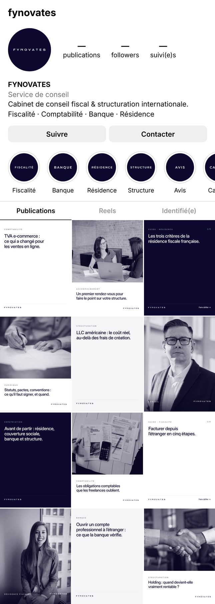
Photo et titre (photo en haut, titre sur bande blanche), Texte (un titre, beaucoup d’espace), Photo pleine page (une personne, la rubrique et le nom) et Carrousel (couverture, puis une étape par diapositive).
Les posts alternent une photo et un texte. La grille forme un damier calme, où aucune photo n’en touche une autre.
Des professionnels différents, des mains qui signent, des documents et des réunions, toujours sans mise en scène excessive. Toutes les photos sont converties dans le même duotone navy, pour que la grille reste homogène quelle que soit la source.
Inter Medium pour les titres, avec des capitales espacées en Montserrat pour les rubriques. Pas de surlignage ni de couleur d’accent : la hiérarchie vient de la taille et de l’espace.
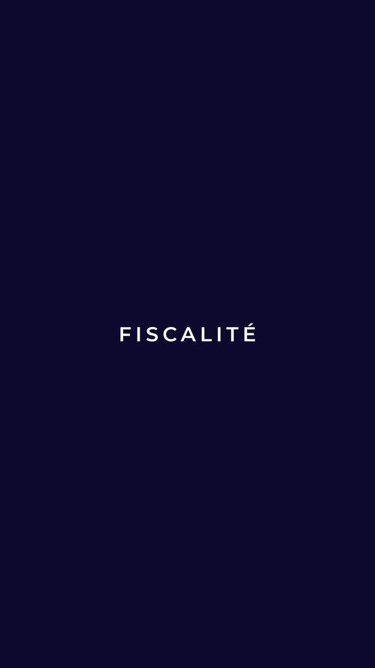
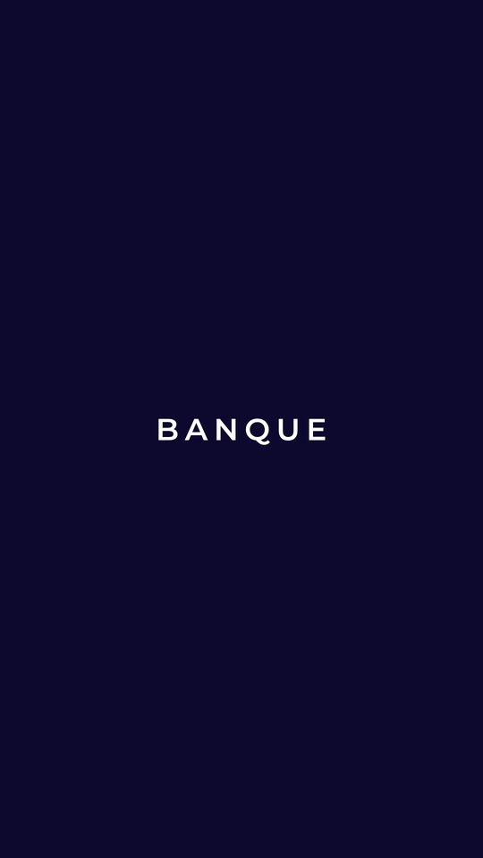
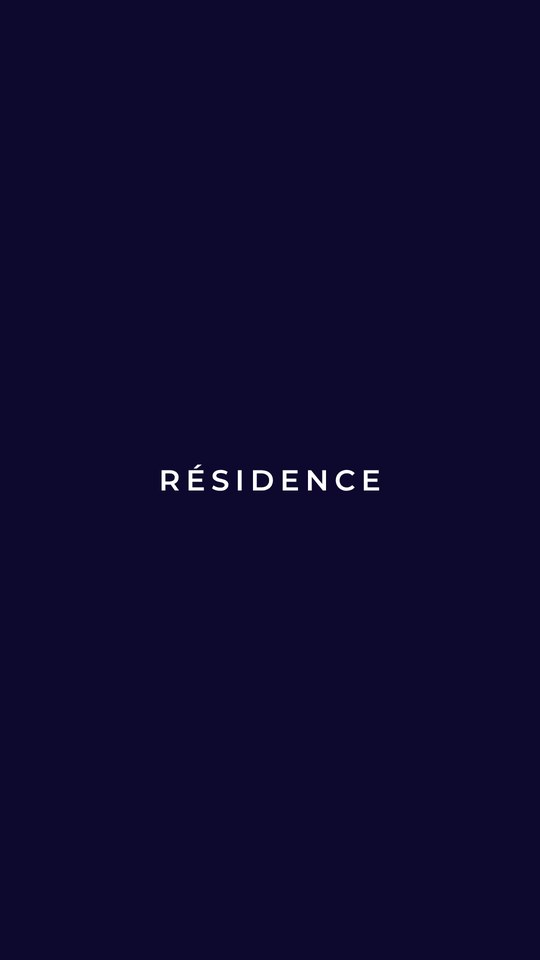
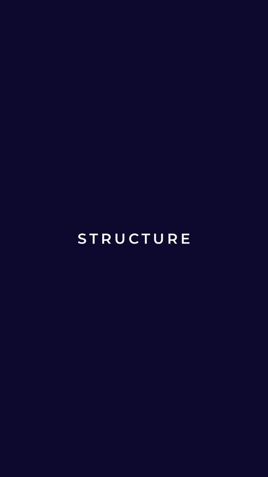
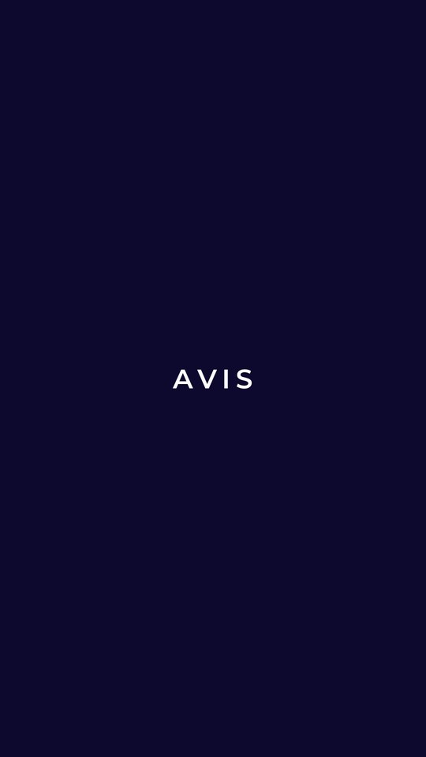
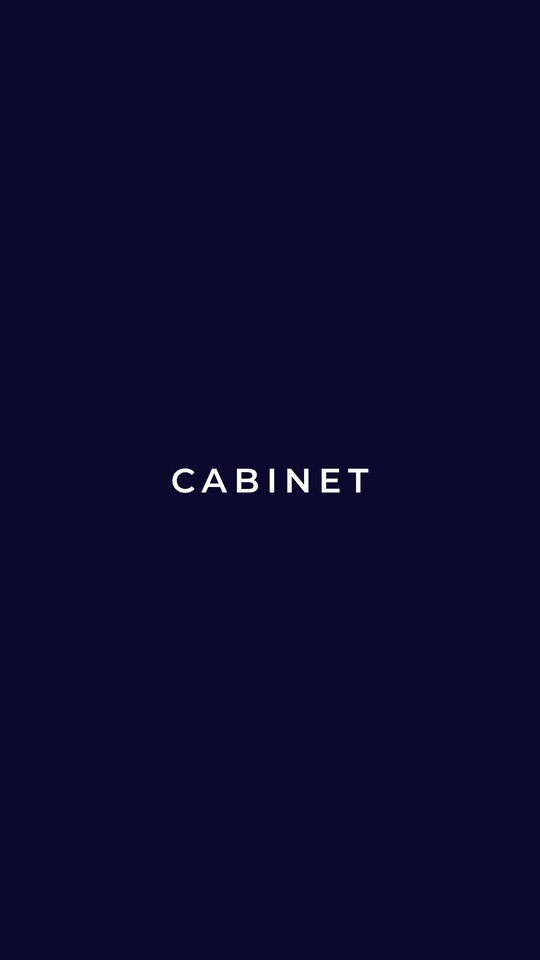
Un fond navy et un mot en capitales espacées, sans icône. Les images sont en 1080 × 1920, à importer comme couvertures de stories à la une.
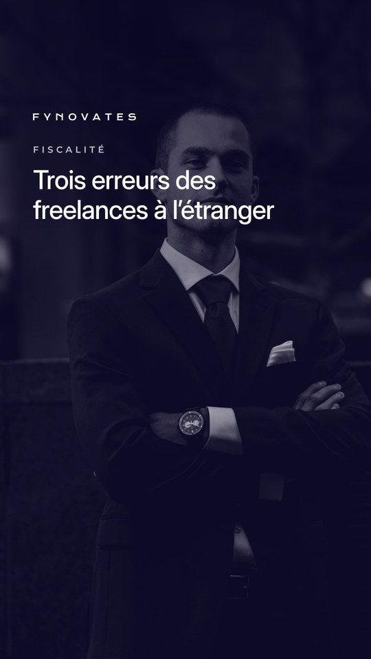
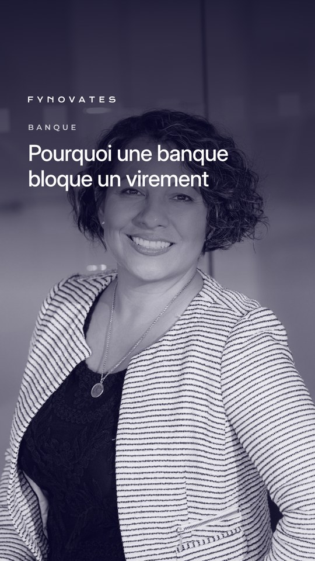
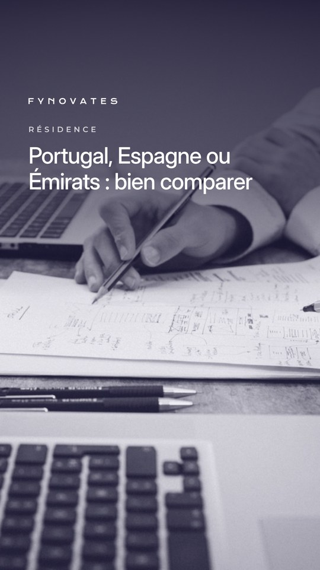
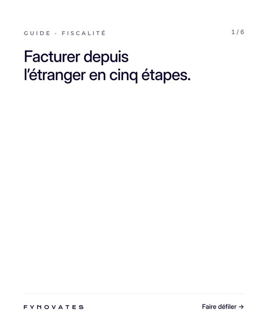
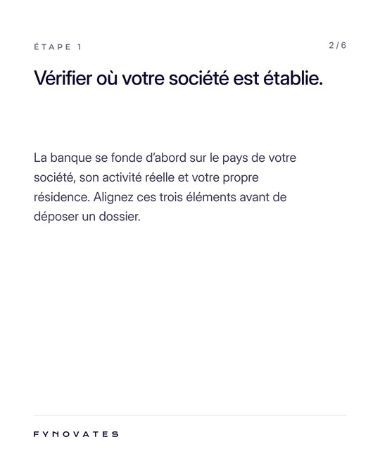
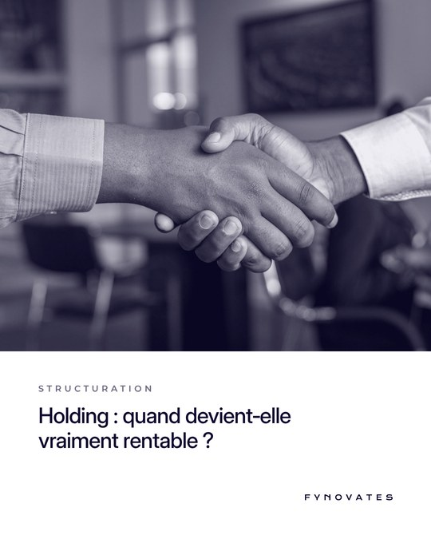
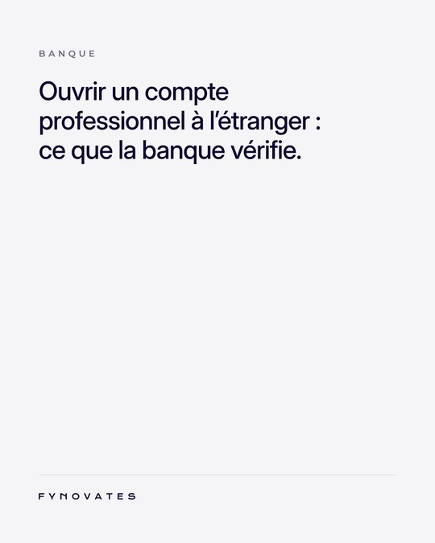
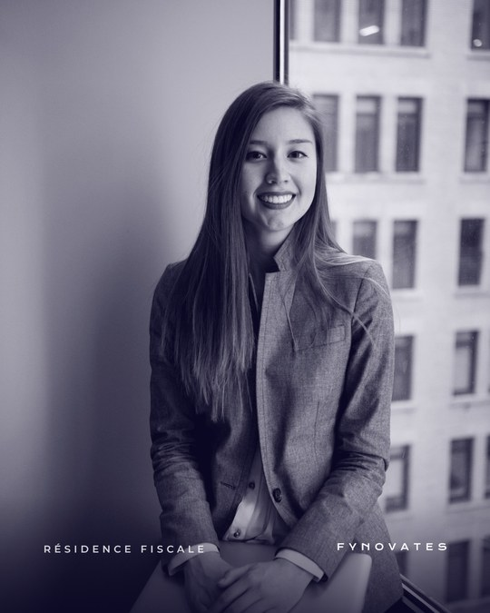
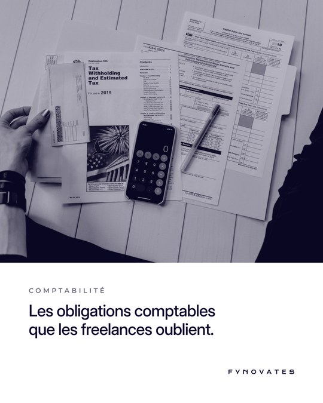
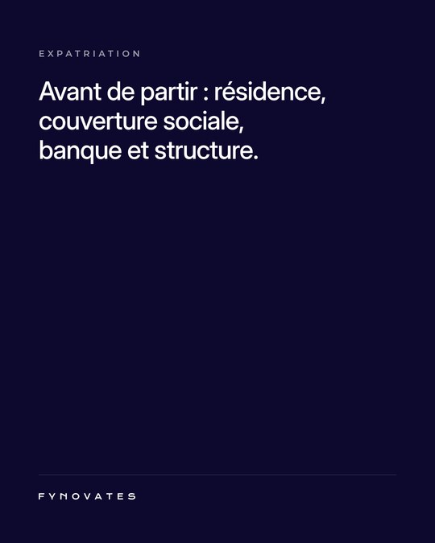
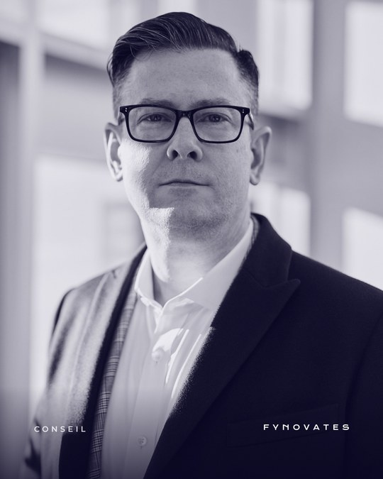
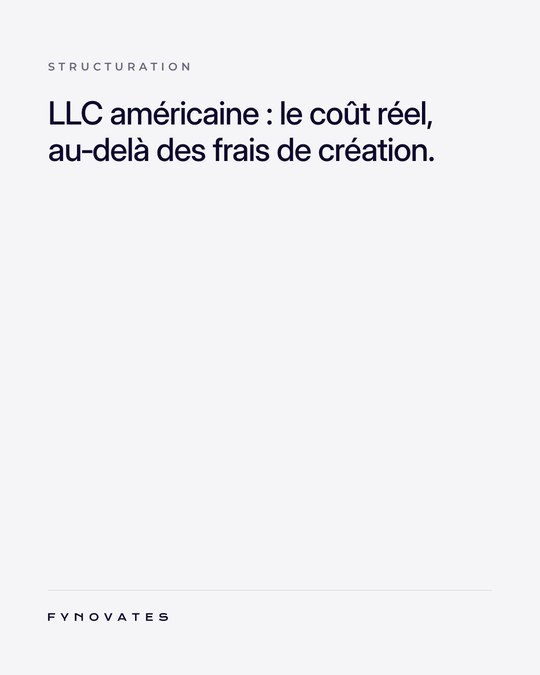
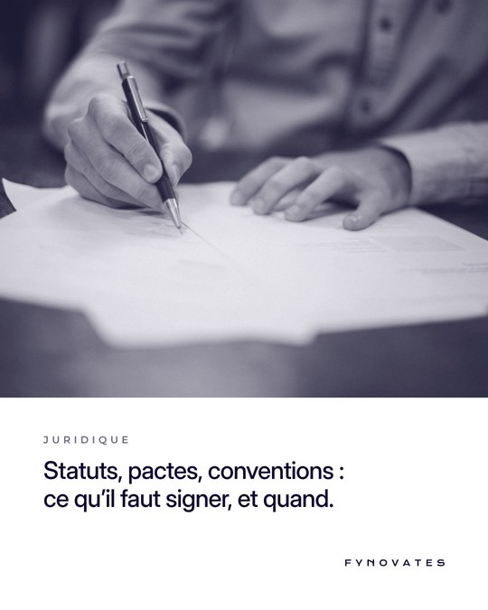
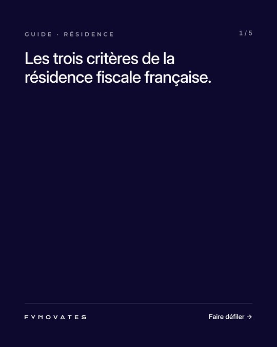
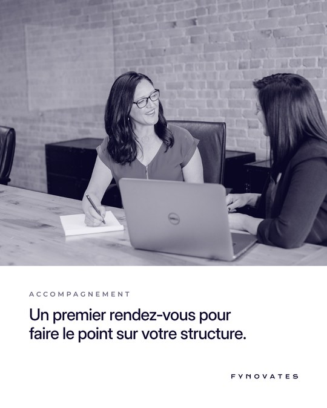
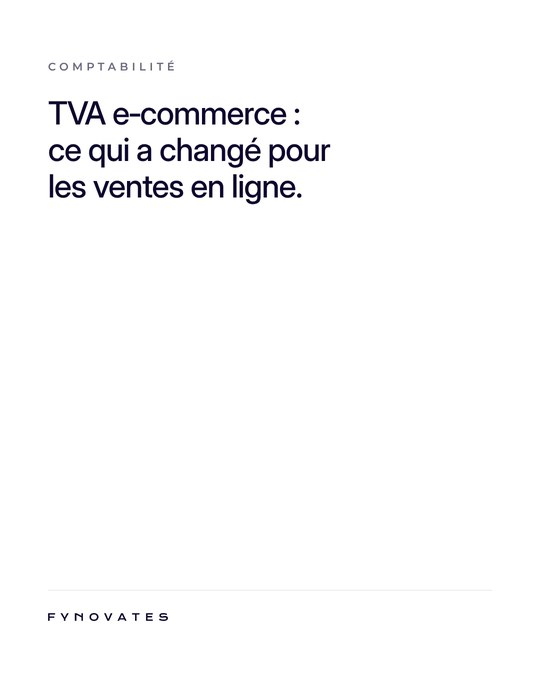
Photos : Unsplash (licence Unsplash, usage commercial autorisé). Liste et liens dans instagram/assets/photos/CREDITS.md.